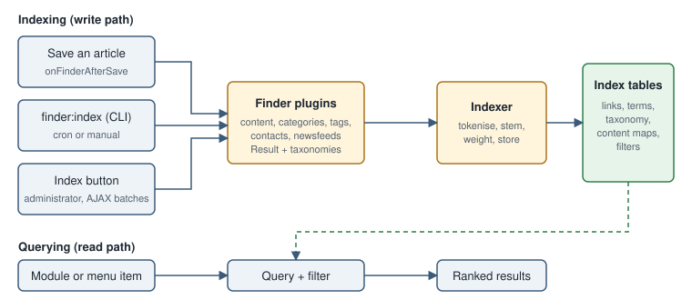

Joomla Smart Search: com_finder, Indexer, Content Maps, Filters and Search Terms
|
This content was generated with the assistance of AI and should be verified against the official documentation before being relied on in production. |
This page describes Joomla Smart Search as it was on 2026-10-30, the date on which its facts were checked against the Joomla! User Guide (https://guide.joomla.org/), the Joomla! Developer Manual and the source tree of the CMS. It was written against Joomla 6.2.x (PHP 8.3 or later); the behaviour described is the same in the 5.4 security-only line unless a version is named. The running example is the Tallpine Hiking Club site: members search trail reports, news and board contacts from a single box, and the club wants alpine routes to be findable by category, tag and language.
Smart Search is used by four kinds of people. Site builders enable the right plugins and place the search box.
Editors rely on it staying current after they save an article. Administrators run and schedule the indexer and tune it
for the size of the site. Developers write finder plugins so that their own components, such as com_tallpine, become
searchable.
What Smart Search is
Smart Search is the Joomla search engine, implemented by the component com_finder. It replaced the original Joomla
search, which scanned the content tables for the typed words and returned matches in the order it found them. Smart
Search instead builds an index in advance: it extracts the significant words of every searchable item, stores them with
a weight, and at query time looks the words up in the index, scores the matching items and ranks them. According to
the User Guide it is enabled by default since Joomla 4. Querying the index is fast and light; the cost is paid when
building and refreshing the index.
Two consequences shape everything below. First, Smart Search returns nothing until the indexer has run, and an item that is not in the index cannot be found, however many times it appears in the database. Second, the engine is a pure PHP implementation on top of the normal database tables, so it is excellent for a club site and adequate for a mid-sized site, but a very large site may be better served by a stand-alone engine such as Solr, as the User Guide itself says.
The legacy search component of Joomla 3 and the Basic Search plugin set are not part of the current platform. Older books and tutorials that tell you to enable "Search - Content" plugins, or that describe the Smart Search indexer only as a button in the browser, predate the CLI-first guidance given in the current User Guide; the Joomla! 4 Masterclass (2023) targets Joomla 4, which reached end of life in October 2025, so check any screen names against 6.2.

The administrator screens
Smart Search adds a Components → Smart Search menu with four pages:
-
Index: the list of every indexed item with its title, type, URL, indexing date and published state. From its toolbar you run the Index button, and under Maintenance you find Clear Index, Optimise and the statistics of the index. The statistics page reports the number of terms, links, attributes and branches the index holds.
-
Content Maps: the list of all indexed items, together with the taxonomy branches and nodes that indexed items have been attached to (see below). Unpublishing a node hides everything mapped to it from the results.
-
Filters: saved combinations of taxonomy nodes that a module or menu item applies to a search.
-
Search Terms: the list of terms visitors typed, with how often each was searched; a Reset button at the top clears them.
The component options (Index toolbar, Options) are described in Options.
Finder plugins: what gets indexed
Content only enters the index through an enabled plugin of the finder group. Joomla ships plugins for articles
(plg_finder_content), categories, contacts, news feeds and tags. Other components add their own. Review them before
the first indexing run, because every enabled plugin adds rows: open System → Plugins, filter by type finder and
disable what the club does not want searchable. Tallpine keeps articles, categories and tags and disables contacts and
news feeds, since the board contacts are not meant to be found by a text search.
Each plugin is a class that extends Joomla\Component\Finder\Administrator\Indexer\Adapter and is built as a
SubscriberInterface plugin (see plugin development and events).
The article plugin subscribes to onFinderBeforeSave, onFinderAfterSave, onFinderChangeState,
onFinderCategoryChangeState and onFinderAfterDelete, which are what keeps the index current when an editor saves,
publishes, unpublishes or deletes an article. The Adapter base class also provides the batch entry points used by a
full indexing run (onStartIndex, onBeforeIndex, onBuildIndex) and a garbage-collection hook
(onFinderGarbageCollection).
Inside the article plugin the index() method builds a Result object for the item. It prepares the text, resolves the
SEF route, optionally uses the menu item title, adds the introductory image, adds metadata instructions (meta keywords,
meta description, author, author alias) and attaches taxonomies. The plugin parameter taxonomies decides which of
Type, Author, Category and Language are created, and the plugin also has an option to include archived
items. Custom fields of the article are added to the index as well, which is how a trail’s distance-km or season
value can match a query; see custom fields.
Only items that a visitor may see are returned. Each indexed link records its published state, access level and publishing dates, and the query applies the viewer’s access levels, so a member-only trail report for the Trail Warden access level does not appear for an anonymous visitor. The one known leak is the suggestion list (see Security and privacy).
A finder plugin for com_tallpine
The following sketch makes the trail entity of com_tallpine searchable. It shows the shape of the code; a complete
plugin also needs a manifest, a services/provider.php and language files (see
extension types, manifests and packaging).
<?php
namespace Tallpine\Plugin\Finder\Trail\Extension;
use Joomla\CMS\Plugin\CMSPlugin;
use Joomla\Component\Finder\Administrator\Indexer\Adapter;
use Joomla\Component\Finder\Administrator\Indexer\Indexer;
use Joomla\Component\Finder\Administrator\Indexer\Result;
use Joomla\Database\QueryInterface;
\defined('_JEXEC') or die;
final class Trail extends Adapter
{
protected $context = 'Trail';
protected $extension = 'com_tallpine';
protected $layout = 'trail';
protected $type_title = 'Trail';
protected $table = '#__tallpine_trails';
protected $state_field = 'published';
protected function index(Result $item)
{
$item->setLanguage();
if (ComponentHelper::isEnabled($this->extension) === false) {
return;
}
$item->url = $this->getUrl($item->id, $this->extension, $this->layout);
$item->route = 'index.php?option=com_tallpine&view=trail&id=' . $item->id;
$item->addInstruction(Indexer::META_CONTEXT, 'metadesc');
$item->addTaxonomy('Type', 'Trail');
$item->addTaxonomy('Language', $item->language);
$this->indexer->index($item);
}
protected function setup()
{
return true;
}
protected function getListQuery($query = null)
{
$db = $this->getDatabase();
$query = $query instanceof QueryInterface ? $query : $db->createQuery();
return $query
->select('a.id, a.title, a.alias, a.description AS summary, a.published AS state, a.access, a.language')
->from($db->quoteName($this->table, 'a'));
}
}Source: Joomla Manual: How plugins work
The example needs use Joomla\CMS\Component\ComponentHelper; as well. The state is translated with the plugin’s
translateState() helper in the real article plugin; the published column is used directly here only to keep the sketch
short. Always derive the list query from the real table of the component and test the plugin on a copy of the site before
relying on it.
The indexer
The indexer (Joomla\Component\Finder\Administrator\Indexer\Indexer) takes a Result from a plugin and does the work:
it tokenises the title, body, metadata, path and miscellaneous text, removes or keeps common words and numeric terms
according to the options, stems each token with a language stemmer when one exists, multiplies each occurrence by the
weight of its context (title, text, meta, path, misc) and writes the terms, their links and the taxonomy rows to the
index tables. When an item is indexed again, the stored signature is compared so that unchanged items are skipped.
There are four ways to run it.
On save
The User Guide states that the index is kept up to date automatically whenever content items are amended: the
onFinderAfterSave, onFinderChangeState and onFinderAfterDelete events re-index, unpublish or remove the single
item that changed. In normal editorial use you therefore never need to run the indexer by hand. On-save indexing does
not discover content that existed before the plugin was enabled, content changed by direct SQL, imports that bypass the
model, or items removed by uninstalled plugins, so a full run is still needed from time to time.
The Index button
On the Smart Search Index page, the Index toolbar button opens a modal that indexes the whole site in AJAX chunks, so that each request stays below the PHP execution limit. It is finished when the progress bar disappears and the modal closes. This method is meant for small sites; the User Guide notes that large jobs can take minutes to hours and that errors are hidden in the browser.
The finder:index CLI command
The command is registered by the core as finder:index and is run through the Joomla console:
cd /var/www/html
php cli/joomla.php finder:index # incremental: only items changed since the last run
php cli/joomla.php finder:index --purge # as shown in the User Guide: clear and rebuild
php -d memory_limit=512M cli/joomla.php finder:index
php cli/joomla.php finder:index --minproctime=1 --pause=division --divisor=5An incremental run only handles items that changed and does not remove entries left behind by plugins you have since
uninstalled. A purge run clears the existing entries and rebuilds the index while keeping saved static filters; the
Maintenance → Clear Index button of the administrator removes the filters too. The User Guide writes the purge as
the option --purge, whereas the command class in the source tree declares purge as an optional argument, and its
help text says it "purges and rebuilds the index (search filters are preserved)"; run php cli/joomla.php finder:index
--help on the installed version to see which form it accepts. The command also accepts --minproctime, --pause and
--divisor, which throttle the run: when a batch takes at least minproctime seconds, the command pauses for
(batch time / divisor) seconds, or for a fixed number of seconds if --pause is a number, so a long job does not
starve a shared database server.
On a Docker based development site (see local development with Docker) run it inside the web container:
docker compose exec web php cli/joomla.php finder:indexSource: Joomla User Guide: Using the CLI
The general console is explained in the command line interface page.
Cron and the scheduler
To refresh the index on a timetable, call the same command from the server’s cron:
# crontab -e (run as the web server user; nightly at 02:30)
30 2 * * * /usr/bin/php -d memory_limit=512M /var/www/html/cli/joomla.php finder:index >> /var/log/tallpine-finder.log 2>&1Joomla also has a built-in scheduler (see scheduled tasks). The task plugins that core ships on the 6.2 branch (check files, delete action logs, global check-in, privacy consent, requests, rotate logs, session garbage collection, site status and update notification) do not include a Smart Search indexing task, and the User Guide’s Smart Search pages do not describe one. A site that wants the scheduler to drive indexing therefore needs a small task plugin of its own, written as in scheduled task plugins, or should use the operating system cron as above. Whichever way is chosen, the lazy web scheduler is unsuitable for a full rebuild because of PHP time limits.
Content maps and taxonomies
When a plugin indexes an item it attaches the item to the taxonomy: a tree of branches (Type, Author, Category,
Language, plus whatever a plugin invents, such as Region or Country) and nodes below them. The Content Maps page lists
these branches and nodes, and each node has a published state. This is what the User Guide’s FAQ calls a content map:
a plugin can map every indexed record to a classification, so that results can be filtered by it. Its example is an
animal-species component mapped to kingdom, phylum, class, order and family. For Tallpine, a trail record is mapped to
Type > Trail, Category > Trails > Alpine and Language > en-GB.
Practical uses:
-
To remove a single item from the results without deleting it, unpublish it on the Index page (green tick, or select it and press Unpublish).
-
To remove a whole group, such as every item of the News category, unpublish its node in Content Maps.
-
Taxonomy ids change after a purge and rebuild, which is why the CLI command saves and restores the saved filters around a purge.
Plugin settings decide which taxonomies exist at all. To keep the choices offered to visitors consistent, configure all plugins alike; a single-language site can omit the Language taxonomy.
Filters
A filter is a saved selection of taxonomy nodes. Create one under Smart Search → Filters → New, give it a title and tick the nodes for each branch, for example Category > Trails > Alpine and Language > en-GB, then Save & Close. A filter can be dynamic (it selects nodes by branch and the search form lets visitors choose) or static, a fixed set that the site builder applies. Visitors cannot choose a saved filter from the front end; it takes effect only when it is assigned to a Smart Search module or a Smart Search menu item.
The FAQ confirms that filter drop-downs may accept multiple selections, that you can design your own filter interface
(check boxes, for instance) and that this is fully supported by Smart Search. The advanced search form and the module
show how the same mechanism produces faceted search. Saved static filters survive finder:index --purge, but not a
Clear Index.
The Smart Search module and menu item
Module
Open Content → Site Modules → New, choose Smart Search, give it a title, pick a template position and set the menu assignment. It can sit in almost any position of the template (see modules and positions). Its options let you apply a saved filter to every search made through it. The module only collects the query; it submits to the search results page, so a menu item must exist for the results to appear on.
Menu item
Open Menus → (your menu) → New and choose the type Smart Search → Search. The menu item renders the search form and the results list, and its options override the global component options (menu item settings win over the Options of the component). In the Advanced tab you can switch on Show Sort Fields and choose the Additional Sort Fields, which reveals the sorting layout. See menus and menu items.
The results page uses five layout files in components/com_finder/tmpl/search: default.php, default_form.php,
default_results.php, default_result.php and default_sorting.php. To customise them, create a template override
from System → Site Templates → your template → Create Overrides → Components → com_finder → Search; the
override is written to html/com_finder/search inside the template. Keep the form field named q, because the
page’s JavaScript depends on it. The Tallpine child template overrides default_result.php to add the difficulty of
the trail next to each hit; see
template overrides.
<?php
// templates/cassiopeia_tallpine/html/com_finder/search/default_result.php (excerpt)
\defined('_JEXEC') or die;
use Joomla\CMS\HTML\HTMLHelper;
use Joomla\CMS\Language\Text;
?>
<li class="result tallpine-result">
<h4 class="result__title">
<a href="<?php echo $this->result->route; ?>"><?php echo $this->result->title; ?></a>
</h4>
<p class="result__desc"><?php echo $this->result->description; ?></p>
</li>The override above is intentionally minimal; start from the file Joomla copies for you and change only what you need, so that later core changes are still easy to merge.
Search statistics (Search Terms)
When Gather Search Statistics is enabled in the options, every query typed into the module or menu item is recorded. Smart Search → Search Terms lists each term and how many times it was searched; Reset clears the list. This is the only statistics screen the User Guide documents. For Tallpine, a recurring term with no results (for instance "gpx") tells the editors which content or custom field to add or to make searchable, and terms that never return anything are a good candidate list for synonyms in page copy.
Statistics store what visitors typed, which can contain personal data. Treat the table like any other log: it is subject to the site’s privacy policy, and Reset is the way to dispose of it. Switch the option off on sites that must not keep search queries.
Options
The component options have two tabs. The defaults below are those declared by the component configuration and listed in the User Guide.
| Option | Default | Meaning |
|---|---|---|
Result Taxonomy / Description / Date / URL |
Show |
Which parts of a hit are displayed |
Description Length |
255 |
Maximum summary length, cut at a word boundary |
Result Image |
Hide |
Shows the intro image of the item |
Gather Search Statistics |
Show |
Records the queries listed in Search Terms |
Allow Empty Search |
Show |
Lets a visitor submit with no terms |
Search Suggestions |
Show |
Auto-complete of terms as the visitor types |
Did You Mean |
Show |
Proposes a corrected query |
Query Explanation |
Show |
Shows how the query was interpreted |
Advanced Search / Advanced Tips / Date Filters |
Show / Show / Hide |
Advanced form elements |
Sort Field and Direction |
Relevance, Descending |
Default ordering |
Highlight Search Terms |
Yes |
Highlights at most ten different terms for performance reasons |
Enable OpenSearch (with name and description) |
Yes |
Lets browsers add the site as a search provider |
Search For Phrases |
Disabled |
Indexes adjacent word groups for phrase matching; costs index size and speed |
Indexer Batch Size |
50 |
Items per batch |
Title / Body / Meta / Path / Misc weight multipliers |
1.7 / 0.7 / 1.2 / 2.0 / 0.3 |
Relevance weight of each text context |
Enable Logging |
No |
Writes an indexer log file |
Default Language |
none |
Language used when an item has none |
Filter Common Words / Filter Numeric Terms |
No / No |
Leaves such terms out of the index |
Changes to the weight multipliers, phrase setting and filters on terms only affect items indexed afterwards, so purge and rebuild the index after changing them. The batch-size default is 50 in the configuration shipped with the component and in the options page, whereas the large-sites page of the User Guide mentions a default of 30; the value on the installed site is the one shown in the form.
Language handling
Smart Search stores a language for every indexed link and offers Language as a taxonomy, so on a multilingual site such as Tallpine (English and German with associations, see multilingual sites) a visitor or a filter can restrict results to one language. The indexer then tokenises each item with the language object chosen from the item’s language and, where a stemmer exists, stems the words, so that searching for one word form also matches related forms. Wildcards are not supported. Core includes special tokenisers for Greek and Chinese.
Points to remember:
-
All indexed content must be valid UTF-8.
-
The "Did you mean?" suggestion relies on Soundex and works badly or not at all for many non-English languages; the FAQ says developers are looking for alternatives.
-
The User Guide notes that multilingual use works but has unresolved issues, especially for Asian languages.
-
Items with language "All" appear in every language filter. Index them with the Default Language option set so that the stemmer is predictable.
-
To give each language its own search box, create one Smart Search menu item per language and assign a filter that selects that language’s node.
Large sites and operations
The index grows quickly: the term mapping tables can add roughly three thousand rows for one thousand-word article, because phrases are indexed in groups of up to three adjacent words, and a large site can use gigabytes. The User Guide therefore recommends:
-
run the indexer from the command line, never from the browser, because the CLI has no timeouts, can be aborted and shows errors;
-
raise the PHP memory limit for the CLI, lower the batch size to 5 and then 1 if memory runs out, and lower the memory table limit so the indexer moves to disk earlier;
-
if memory is exhausted, enable one finder plugin at a time to find the content type that causes it, and split exceptionally large articles;
-
run a full rebuild when the site can be taken offline: the indexer has no locking, so two indexers at once, or editing content while a full index runs, can corrupt the index.
The Optimise button of the Maintenance menu defragments the index tables after large deletions. Performance tips that are not specific to search are in caching and performance.
Security and privacy
-
Auto-complete can reveal restricted terms. The suggestion list is built from the index and may offer words that occur only in content a visitor may not view. If that matters, set Search Suggestions to Hide under Smart Search options.
-
Access levels are applied to results, but only the plugin knows the real access of an item: a custom finder plugin must index the correct
accessand state, or private records are listed publicly. -
Search terms are recorded when statistics are enabled; see above.
-
Output in the results is already escaped by the layouts; overrides must escape anything they add (see security in extensions).
-
Permissions: access to the Smart Search component and to its options is governed by ACL, see users, groups, access levels and ACL.
Common errors and pitfalls
| Symptom | Likely cause and remedy |
|---|---|
No results at all |
The indexer has never run, or no finder plugin is enabled. Run |
New article not found |
The article is unpublished, its category is unpublished or in a restricted access level, or the finder plugin is disabled. |
Deleted plugin content still listed |
Incremental runs do not remove entries of uninstalled plugins; run a purge. |
Index run stops with a memory error |
Raise |
Weights or phrases changed but ranking is the same |
Changes need a purge and rebuild. |
Filters vanished |
Clear Index removes saved filters; use the purge form of |
Corrupted or duplicated entries |
Two indexers ran together, or content was edited during a full index. |
Results page layout breaks after an override |
The search input must keep the name |
Version notes
-
Smart Search has been enabled by default since Joomla 4. Its plugins are
SubscriberInterfaceclasses that handle concrete event objects (for example the after-save event) in the 5.x and 6.x series. -
The console command
finder:indexhas existed since Joomla 4.0. Joomla 6 removed the CMSCliApplication, socli/joomla.phpis the supported entry point (see upgrading Joomla 5 to 6). -
Joomla 6.2 is current and 5.x receives security fixes only, so the plugin and command descriptions here apply to both.